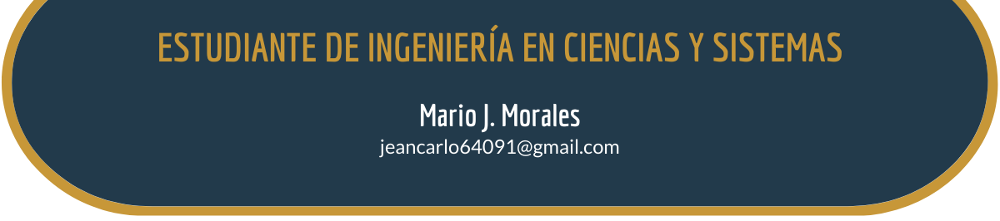
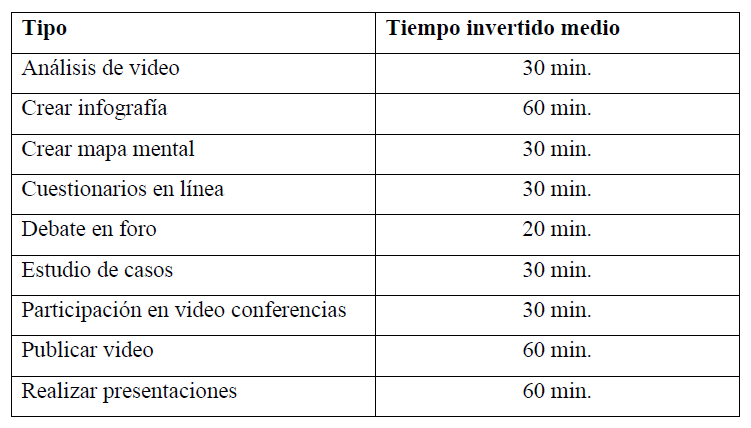

Artículo 9 Análisis de dificultades para la educación virtual y propuesta de mejoras de los estudiantes de la escuela de ciencias y sistemas de la USAC

9.1 Resumen
Debido a la situación actual del mundo suscitada por la pandemia COVID 19, la educación virtual ha tomada un gran auge; un ejemplo de ello es la utilización de esta modalidad en la Escuela de Ciencias y Sistemas de la USAC. Para conocer la situación actual y oportunidades de mejora en dicha escuela se creó un instrumento de evaluación docente basado en prácticas realizadas por 2 de las mejores universidades a nivel global. El objetivo del estudio es contribuir a mejorar el modelo didáctico docente de educación virtual de la escuela de Ciencias y Sistemas mediante el estudio de la situación actual del mismo. El estudio se realizó con una encuesta enviada a través de correo con ayuda del DTT (Desarrollo de transferencia tecnológica) a los estudiantes de la escuela respecto a los cursos del área profesional, obteniendo 430 respuestas. Los resultados mostraron que los catedráticos graban sus clases y poseen dominio en la utilización de Google Meet, y UEDi. Por otra parte, se encontró que algunos catedráticos no realizan actividades complementarias.
9.2 Palabras clave
UEDi, Meet, COVID-19, E-learning, actividades complementarias, educación superior
9.3 Introducción
En la actualidad, la pandemia de COVID-2019 ha trastocado por completo la educación a nivel nacional. En 2020 y 2021, todas las instituciones educativas se vieron forzadas a renovar sus modelos educativos a un medio remoto para reducir los potenciales contagios. La Escuela de Ciencias y Sistemas (ECYS) de la USAC es un claro ejemplo de ello al brindar todas las clases a través de videoconferencias y utilizar una plataforma virtual (UEDi) para compartir material, calificar tareas, dejar proyectos, etc.
Sin embargo, este cambio de medio hacia la virtualidad conlleva un gran desafío si se pretende mantener la calidad educativa. La educación virtual no consiste únicamente en digitalizar los contenidos impartidos, sino que representa un cambio en la manera de enseñar. Las sesiones virtuales deben ser amenas para todos, a la vez que se deben realizar actividades para garantizar la correcta abstracción de los temas.
El presente trabajo revisa el desempeño de la ECYS respecto al cambio de clases virtuales a través de un instrumento distribuido a sus alumnos. Posteriormente, los resultados son revisados para determinar las oportunidades de mejora y por último se presenta un marco de buenas prácticas que pueden ayudar a enriquecer la calidad educativa.
Materiales y Métodos
Diseño: Esta investigación se realizó con una metodología cuantitativa con un diseño de tipo no experimental.
Población y entorno: El muestreo fue por disponibilidad.
Intervenciones: El instrumento es una encuesta utilizada en esta investigación, el cual fue de elaboración propia con base en buenas prácticas en educación virtual empleadas en las universidades norteamericanas MIT y Harvard. Además, se creó un marco de buenas prácticas, el cual se encuentra al final del presente documento.
Este marco está basado en las prácticas de las universidades anteriormente mencionadas
Resultados
En la figura 9.1 se observa que la respuesta con mayor representatividad de preguntas negativas es la pregunta 7, con un porcentaje del 26.42%. Por lo cual podemos afirmar que algunos catedráticos deberían realizar actividades complementarias a las clases virtuales.
Además, en la figura 9.2 se aprecia la lista de las 5 secciones con peor nota las cuales son: Arqui 2 sec. “N”, IPC 2 sec. “B”, Modelación 2, Organización Computacional sec. “A” y Sistemas Operativos 2. Estos cursos poseen una muy buena oportunidad de mejora para asignar más actividades complementarias que ayuden a los estudiantes a comprender los contenidos brindados.
Discusión
Actualmente se cuenta con la plataforma virtual docente UEDi en donde se comparte cualquier material oficial. Las clases son impartidas a través de Google Meet, la cual es una buena plataforma como podemos ver en el cuadrante de Gartner en el cual posee una posición buen como challenger (ver figura 9.3). Esta plataforma integra las cuentas de correo oficiales de los alumnos para agendar el horario lo cual facilita su uso.
Conociendo cual es el estado actual del modelo docente, listaremos oportunidades de mejora para el mismo. La primera oportunidad de mejora es compartir siempre los materiales y apuntes presentados en las clases virtuales por los docentes, situación que se refleja en ciertos cursos y secciones específicas de la carrera.
Actualmente Google Meet permite grabar las sesiones para que el alumno la pueda revisar posteriormente las lecciones impartidas en el día de clase, pero también es recomendable compartir cualquier apunte realizado en clase esto utilizando la plataforma oficial UEDi. A veces es más sencillo examinar un diagrama para entender una explicación, que revisar la sesión completa.
La siguiente oportunidad para docentes y tutores académicos es evitar leer las presentaciones. Hay que recordar que las presentaciones son solo una herramienta que facilita resaltar ciertos puntos al explicar un tema.
Otro punto importante, es buscar maneras de hacer más dinámicas las clases en específico la validación del conocimiento del estudiante al final de cada sesión. Actualmente se cuenta con diversas herramientas didácticas gratuitas en línea que nos ayudan a hacer diversas actividades didácticas en clases virtuales.
Los resultados muestran que se necesitan agregar más actividades complementarias al plan de estudio con el fin de ayudar a la comprensión de los temas y darles dinamismo a las clases (ver figura 9.1).
Agradecimientos
La investigación fue llevada a cabo con el apoyo de la dirección del DTT (Desarrollo de Transferencia Tecnológica) y la Escuela de Ciencias y Sistemas.
Referencias
[1] [González, Rocío][Clases virtuales en contextos de emergencia: COVID-19]. Recuperado de: http://bitly.ws/qriQ. [Último acceso: marzo 2021].
[2] [Revista ingeniería y ciencia][Deserción estudiantil en las Universidades de Guatemala y en la Universidad Rafael Landívar]. Recuperado de: http://bitly.ws/qrj9. [Último acceso: marzo 2021].
[3] [Gartner][Gartner Magic Quadrant for Meeting Solutions]. Recuperado de: http://bitly.ws/qrjc. [Último acceso: marzo 2021].
[4] [Hernández, Verónica][Haciendo la transición de educación presencial a educación virtual]. Recuperado de: http://bitly.ws/qrje. [Último acceso: marzo 2021].
[5] [Organización Panamericana de la Salud][Se confirma primer caso de COVID-19 en Guatemala]. Recuperado de: http://bitly.ws/qrji. [Último acceso: marzo 2021].
[6] [Harvard University][Teach Remotely]. Recuperado de: http://bitly.ws/qrjj. [Último acceso: abril 2021].
[7] [Massachusetts Institute of Technology][Teach Remote]. Recuperado de: http://bitly.ws/qrjp. [Último acceso: mayo 2021].
[8] [Morales Saldarriaga, Juan Carlos][Tweets sobre e-Learning: Reflexiones y definiciones sobre educación virtual]. Recuperado de: http://bitly.ws/qrjr. [Último acceso: abril 2021].
Figura 9.1: Gráfico de barras acumuladas de porcentajes de respuestas a preguntas del instrumento de evaluación. Fuente: Elaboración propia
Figura 9.2: Dashboard pregunta no. 7 sobre Actividades complementarias. Fuente: Elaboración propia
Figura 9.3: Cuadrante mágico de Gartner de plataformas para reuniones. Fuente: Gartner
Tabla 9.1: Actividades en modalidad virtual. Fuente: eLearning Masters – Universidad Galileo. Recuperado de: http://bitly.ws/qrjH 